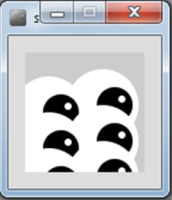

More on methods

more sophisticated methods return types parameters recursion
Strings
String API String methods
Lab-03b

more sophisticated methods return types parameters Strings String methods JOptionPane